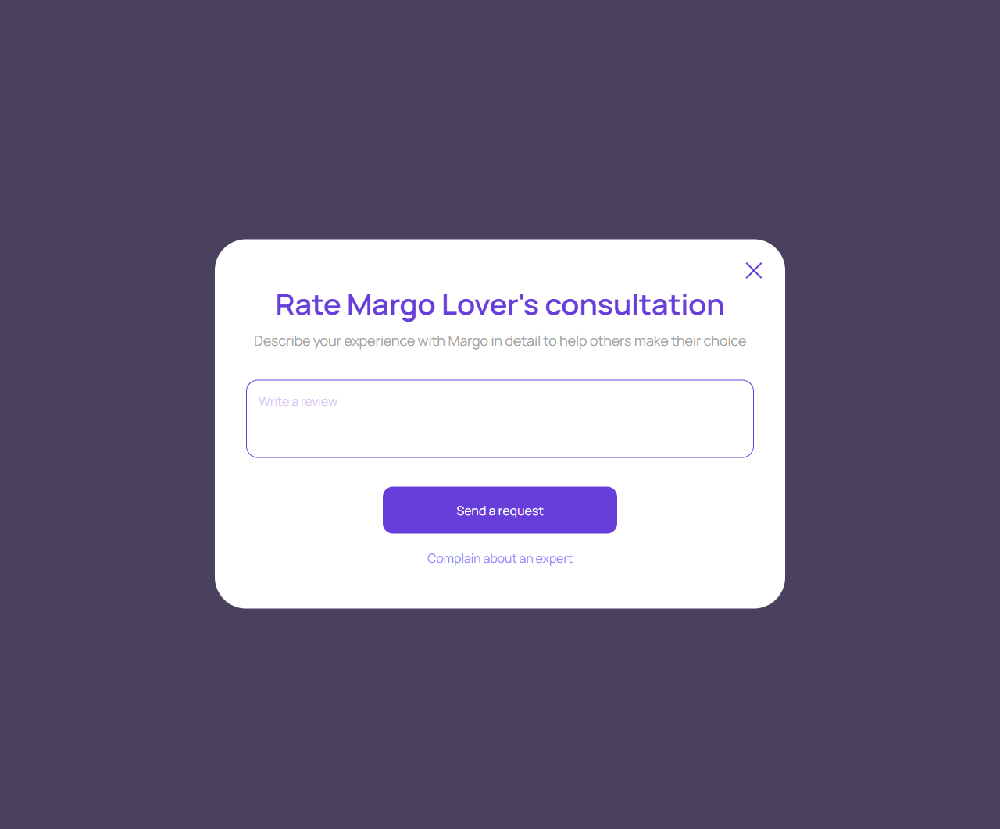
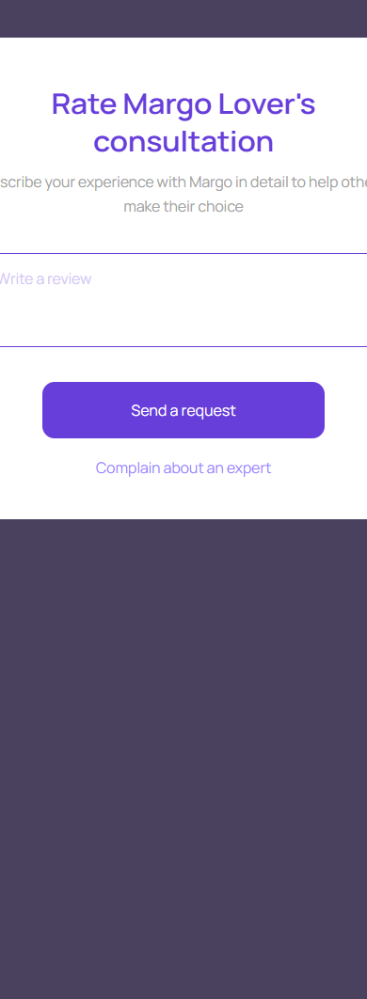

Отзыв о консультации
account/consultation-review.html
Сохранить одну оценку и текст.
| Когда открывается | Завершенная собственная сессия |
|---|---|
| Данные | sessionId; expertId; stars; text; existingReview; moderation. |
| Сценарий | Send валидирует оценку/текст и сохраняет один отзыв; Complain открывает жалобу; Close не публикует черновик. |
| Переходы | Помощь по консультации · Консультация завершена |
Общая и предметная логика. Снимки и подписи элементов — исходная редакция макета; поздние уточнения ТЗ имеют приоритет в своей области. Это не проверка текущего сайта.
Сопоставление с AskNebula
Существующие наблюдения 07–09.10.2026, без повторной проверки в этой передаче.
Нужна отдельная сверка соответствующего экрана/состояния референса. Отсутствие аналога не установлено.
Состояние 1280 · 1280 × 1062


Элементы и ожидаемые действия
| Элемент | Название в макете | Действие | Ожидаемый результат |
|---|---|---|---|
| E001 Скрыт в этом состоянии | Write a review | Открыть отзыв для текущей завершенной консультации. | Передать sessionId/expertId и eligibility; не создавать отзыв при открытии. |
| E002 Виден | Close review composer | Закрыть локальное окно или вернуться к инициатору; Stay отменяет намерение завершить. | Вернуть фокус и исходный контекст. Не выполнять оплату, удаление или Complete. При неизвестном результате платежа сначала сверить заказ. |
| E003 Виден | Review text | Заполнить поле текущей формы: Review text. | Черновик сохраняется при ошибке; допустимая длина/обязательность валидируются сервером. Отправка относится к сценарию «Отзыв о консультации». |
| E004 Виден | Send a request | Сохранить одну оценку и текст отзыва по собственной завершенной консультации. | Идемпотентный результат; ошибка сохраняет черновик; действуют правила модерации. |
| E005 Виден | Complain about an expert | Открыть/подать обращение о конкретном диалоге, консультации или платеже. | Один связанный клиентский тикет; Internal закрыт. Жалоба не выполняет возврат автоматически. |
Состояние 390 · 390 × 1062


Элементы и ожидаемые действия
| Элемент | Название в макете | Действие | Ожидаемый результат |
|---|---|---|---|
| E001 Скрыт в этом состоянии | Write a review | Открыть отзыв для текущей завершенной консультации. | Передать sessionId/expertId и eligibility; не создавать отзыв при открытии. |
| E002 Виден | Close review composer | Закрыть локальное окно или вернуться к инициатору; Stay отменяет намерение завершить. | Вернуть фокус и исходный контекст. Не выполнять оплату, удаление или Complete. При неизвестном результате платежа сначала сверить заказ. |
| E003 Виден | Review text | Заполнить поле текущей формы: Review text. | Черновик сохраняется при ошибке; допустимая длина/обязательность валидируются сервером. Отправка относится к сценарию «Отзыв о консультации». |
| E004 Виден | Send a request | Сохранить одну оценку и текст отзыва по собственной завершенной консультации. | Идемпотентный результат; ошибка сохраняет черновик; действуют правила модерации. |
| E005 Виден | Complain about an expert | Открыть/подать обращение о конкретном диалоге, консультации или платеже. | Один связанный клиентский тикет; Internal закрыт. Жалоба не выполняет возврат автоматически. |